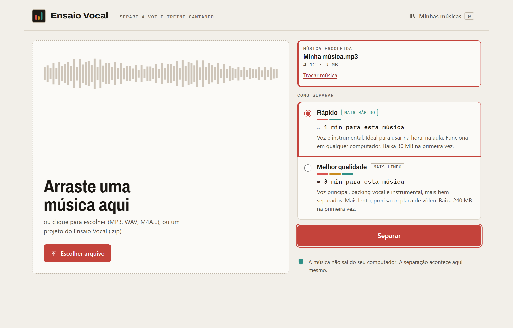
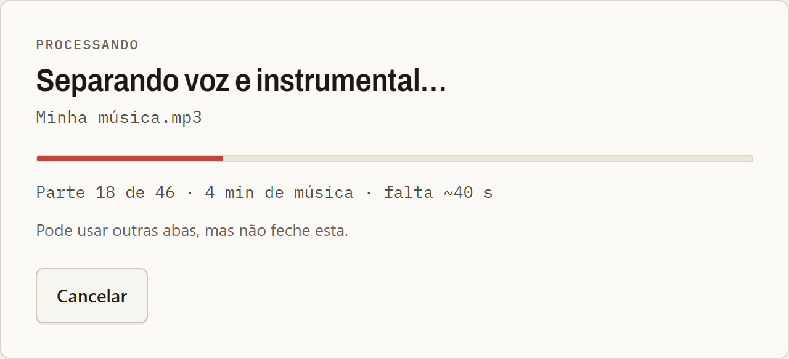
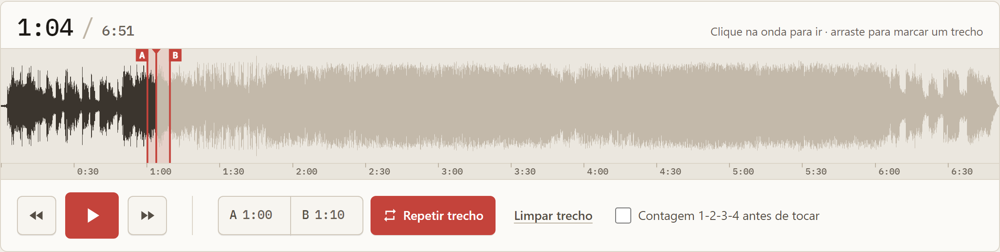
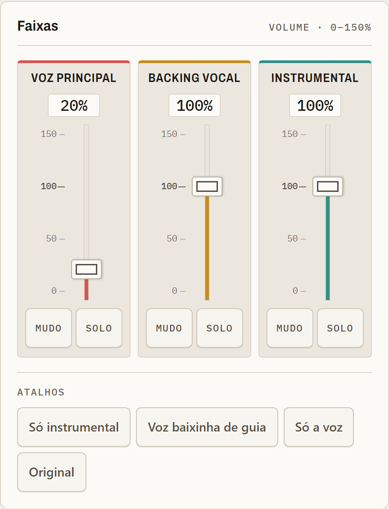
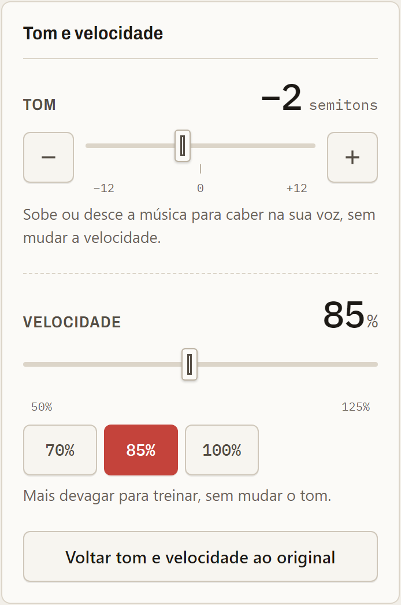
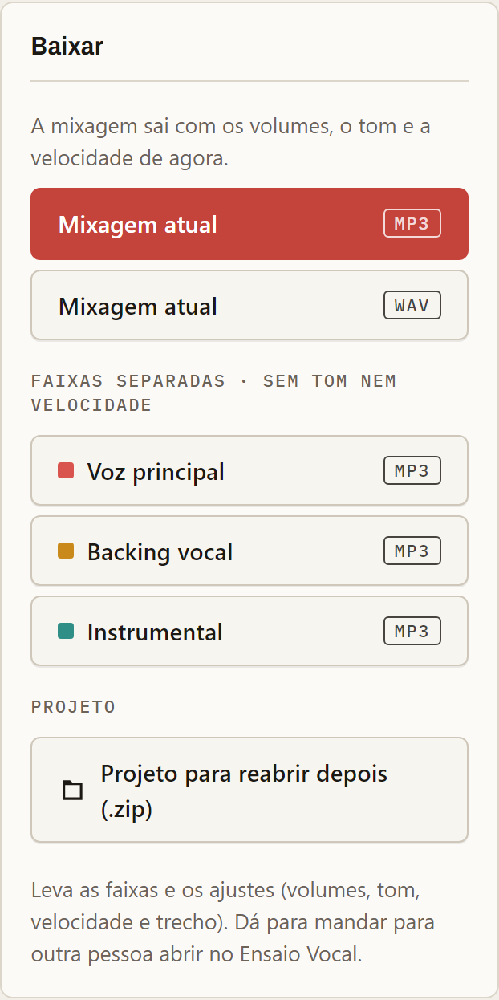
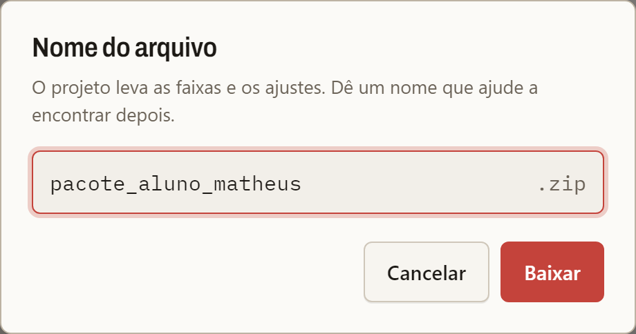
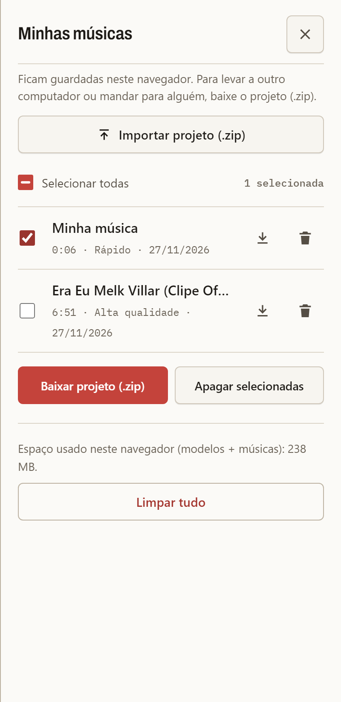

Guia rápido
Uma ferramenta gratuita, sem limite de uso, para separar a voz do instrumental de qualquer música e ensaiar em cima dela. Tudo roda no seu computador: a música não é enviada para lugar nenhum.

Enquanto separa, a barra mostra quanto falta. Pode usar outras abas, mas não feche esta.


Atalhos de teclado: espaço toca e pausa · ← → voltam e avançam 5 s · A B marcam o trecho · L liga e desliga a repetição.

Cada parte tem o seu fader (o controle que sobe e desce), de 0 a 150%.
Atalhos prontos, embaixo das faixas:

Tom: use − e + para descer ou subir meio tom de cada vez (até 12 para cada lado). A velocidade não muda.
Velocidade: de 50% a 125%, sem mudar o tom. Os botões 70% e 85% são bons para estudar uma passagem devagar e depois ir subindo.
Voltar tom e velocidade ao original desfaz tudo de uma vez.

Enquanto o arquivo é gerado aparece o botão Cancelar, caso tenha clicado errado.
O projeto (.zip) guarda a música já separada com os seus ajustes: volumes, tom, velocidade e o trecho marcado. O aluno abre e já cai no exercício pronto, sem esperar separar de novo.

Como o aluno abre: entra no mesmo link e arrasta o .zip para a área "Arraste uma música aqui". Funciona também no celular, para treinar.
Vários de uma vez: em Minhas músicas (botão no alto da tela), marque as músicas e clique em Baixar. Sai um arquivo só, com todas dentro.

Toda música separada fica guardada neste navegador e reabre na hora.
| O que aconteceu | O que fazer |
|---|---|
| "Melhor qualidade" aparece como indisponível aqui | Abra no Google Chrome atualizado. Se continuar, use o modo Rápido. |
| Está demorando muito | Use o modo Rápido. Na primeira vez ele ainda baixa o modelo; depois fica guardado. Sem placa de vídeo, o Rápido leva mais ou menos o tempo da própria música. |
| A página fechou sozinha ou deu erro de memória | Feche outras abas e programas e tente de novo. No celular, separe no computador. |
| "Não deu para guardar na biblioteca" | Falta espaço no navegador. Apague músicas antigas em Minhas músicas ou baixe o projeto. |
| Não consegue abrir o arquivo da música | Use MP3, WAV ou M4A. Arquivos protegidos (de app de streaming) não abrem. |
| Janela anônima | Funciona, mas o app baixa o modelo toda vez e as músicas somem ao fechar. |
Depois do primeiro teste, me conte: funcionou no seu computador? (Mac ou Windows, Safari ou Chrome) · a voz ficou bem separada no "Só instrumental"? · apareceu algum erro? Um print da tela ajuda muito.